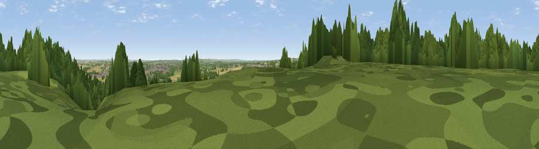

Viewpoint near Hopwas
#41818 in England · top 75% of its area beats it · near HopwasWhere it is
The exact computed spot (SK 17375 05275). Click the marker for map links.
The view, rendered

A 360° render of this exact spot computed from the terrain model, tree cover and land cover — summer colours, afternoon light, calibrated against photographs of famous viewpoints. Real trees, hedges and buildings will differ in detail.
The panorama
Grey silhouette: terrain skyline in each direction (720 bearings, Earth curvature and refraction included). Dashed green: skyline with trees (+15 m) and buildings (+8 m) as obstacles. Blue strip: how far the ground is visible on each bearing.
Where the view opens
Wedge length = distance to the farthest visible ground on that bearing (vegetation-aware). Rings at 10, 25 and 50 km.
What fills the view
34% cropland · 29% woodland · 27% grassland · 10% built-up
Angular shares of the visible panorama (visual magnitude), not map area. Landscape diversity 0.58 (0–1 Shannon).
Key numbers
More beautiful places nearby
The staircase of upgrades: each row has a higher view potential than everything closer. Driving times are estimates from straight-line distance, calibrated against real road routing — check an actual route before setting out.
| Place | Direction | Drive | Score |
|---|---|---|---|
| Viewpoint near Hopwas | NE · 1 km | ~2 min | 27.3 |
| Viewpoint near Hopwas | SW · 1 km | ~3 min | 39.0 |
| Viewpoint near Mile Oak | SSW · 3 km | ~8 min | 41.9 |
| Viewpoint near Hopwas | SW · 4 km | ~8 min | 53.0 |
| Viewpoint near Mile Oak | SW · 4 km | ~9 min | 55.1 |
| Viewpoint near Streetly | SW · 14 km | ~25 min | 69.5 |
| Viewpoint near Stanton under Bardon | ENE · 30 km | ~47 min | 76.0 |
| Viewpoint near Woodhouse Eaves | ENE · 35 km | ~53 min | 77.7 |
52.64494, -1.74464 · source: screening · position refined by local search. Computed location — check access rights before visiting.